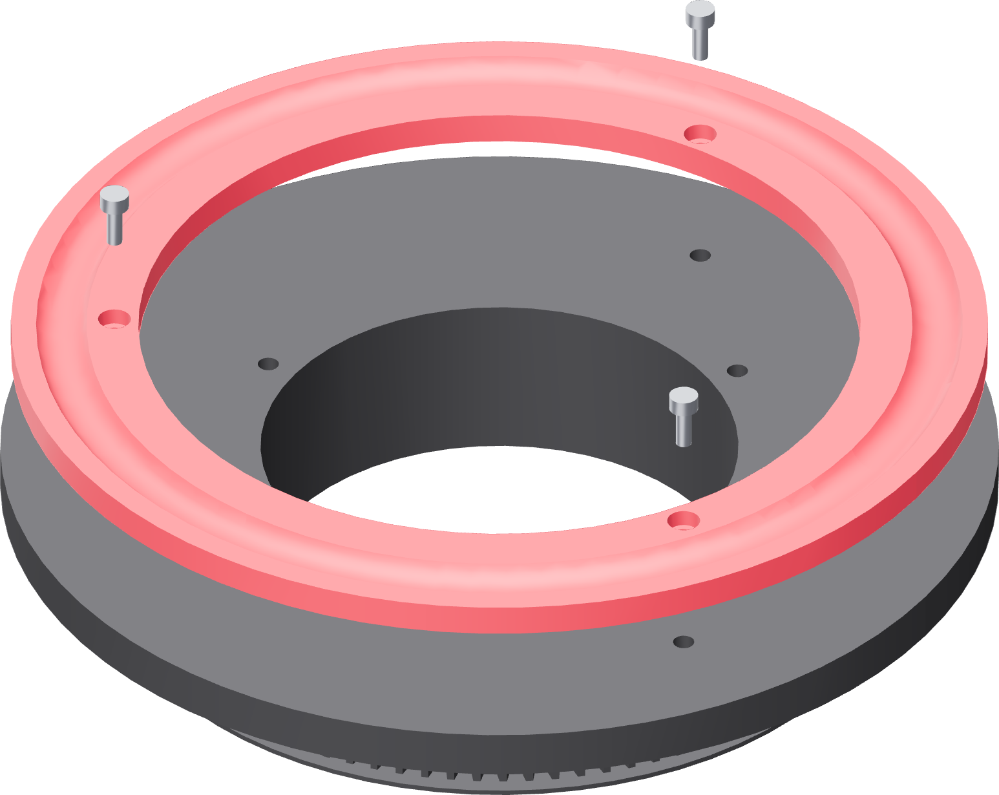

How to read a picture here
Every part of this fixture prints in the same black stock, so the pictures colour three things the real rig does not.
| In a picture | Means |
|---|---|
| Coral | The part or the fastener this step adds. Everything already standing stays black. |
| Brass | A heat-set threaded insert. |
| Blue | A gauge, a probe, a packing block or the dial indicator — something on the bench that is not part of the fixture. |
| Grey metal | The motor, the pulley, a screw, or the 316L tube. |

Fasteners are drawn poised
A screw shown home is a screw you cannot see. Every fastener in this guide floats a short way off its own hole, along the axis it goes in on. The picture says which hole and which screw. It is not a picture of the finished joint.
Screw and insert proxies are drawn to catalogue head and length so you can tell an M3 × 8 from an M3 × 25 at a glance. Do not measure them off the page.
A box like this is a gate
It is the reading that says a step is finished. A gate that does not pass is not a thing to work around. Fix the cause and take the reading again before the next step.